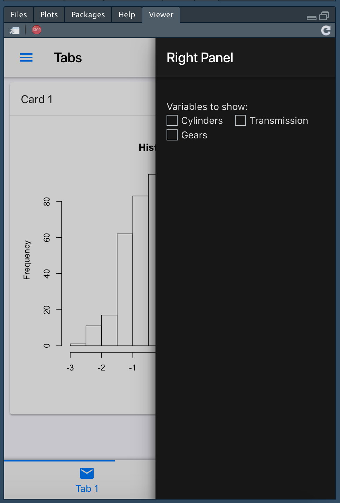

Introduction
-
shinyMobile is built on top of the latest framework7 template (V5.1.1). It may be used for different purposes:
- develop mobile-ready shinyapps
- develop progressive web shinyapps (PWA, similar to native apps)
- develop desktop shinyapps
3 Custom skins
-
shinyMobile has 3 skins:
- aurora for desktop apps
- ios and md for mobile apps
- auto automatically detect if the app is running with android or iOS and accordingly adapt the layout
It is possible to apply the iOS skin on android and inversely, even though not recommended.
- This package also provides 2 themes, namely light and dark.
3 Layouts
-
shinyMobile brings 3 out of the box layouts:
-
f7SingleLayout: develop simple shinyMobile Apps (best choice for iOS/android Apps) -
f7TabLayout: develop complex multi tabbed Apps (best choice for iOS/android Apps) -
f7SplitLayout: for tablets and desktop with a sidebar, navbar and a main panel
-
New Inputs
-
shinyMobile has its own custom input widgets with unique design for each skin (iOS/android/aurora):
- f7Slider
- f7Text
- f7checkBox
- f7checkBoxGroup
- f7Radio
- f7Toggle
- f7Stepper: equivalent to
numericInput()from {shiny} - f7Date: experimental
- f7Picker
- f7DatePicker
- f7ColorPicker
- f7Password
- f7SmartSelect
- f7Select
- f7Button: similar to
actionButton()from {shiny} - f7Fab: enhanced
f7Button()with ability to be gathered in af7Fabs()container
-
It also has custom update functions to act on the server side:
- updateF7Picker
- updateF7Stepper
- updateF7Toggle
- updateF7Slider
- updateF7Fab
- updateF7Date
- updateF7Text
- updateF7Checkbox
- more to come on a future release
-
shinyMobile has custom input values for sidebar and tabs as well as dedicated update functions to act on the server side:
- updateF7Tabs
- more to come soon
-
shinyMobile has custom input for sidebar (
f7Panel()) as well as a serve side update function:- updateF7Panel
Create your first App
Select a template
This choice is crucial when you are developing an App. It depends on the complexity of your visualizations and content. If your plan is to develop a simple graph or table, you should go for the f7SingleLayout() option. For more complex design, the best is f7TabLayout(). f7SplitLayout() is specific for tablets and desktop apps.
Simple Layout
While only the navbar is mandatory, other components such as the toolbar are optionnal for the f7SingleLayout().
Tabs Layout
The … argument requires f7Tabs(..., id = NULL, swipeable = FALSE, animated = TRUE). The id argument is mandatory if you want to exploit the updateF7Tabs() function. f7Tabs() expect to have f7Tab(..., tabName, icon = NULL, active = FALSE) passed inside.
Page
It is the main skeleton of the template.
f7Page(
...,
init = f7Init(skin = "auto", theme = "light"),
title = NULL,
preloader = FALSE,
loading_duration = 3
)f7Init() is mandatory (see below) since it sets up the app. preloader is useful in case you want to display a loading screen. f7Page() accepts any shinyMobile layout.
The Toolbar
This is an option if you decide not to embed a f7SubNavbar(). The toolbar is the rigth place to add f7Button(), f7Link(), f7Badge()… Its position is controlled with the position parameter (either top or bottom).
f7Toolbar(
...,
position = c("top", "bottom"),
hairline = TRUE,
shadow = TRUE,
icons = FALSE,
scrollable = FALSE
)Interestingly, f7Tabs() is a custom f7Toolbar()!
Panels
Panels are also called sidebars. f7Panel() is the corresponding function.
f7Panel(
...,
title = NULL,
side = c("left", "right"),
theme = c("dark", "light"),
effect = c("reveal", "cover"),
resizable = FALSE
)Although the App has a theme parameter, f7Panel() has an independant theme option. For instance, it is definitely possible to create a dark f7Panel() while the page theme is light, and conversely. Its behaviour is controlled via the effect argument: - “reveal” will make the body content move and resize - “cover” will cover the body content The resizable argument allows to dynamically resize the panel.
Note that for the moment, there is no option to control the width of each panel.
As stated previously for the f7SplitLayout, the f7Panel() may also be considered as a sidebar. In that case, we may include f7PanelMenu(). Finally do not forget to set up the f7Navbar so that panels are allowed!


App Initialization
This is probably the most inportant function of the template: f7Init(). This functions helps to set up the template as well as properly initializing the main view of your app.
f7Init(
skin = c("ios", "md", "auto", "aurora"),
theme = c("dark", "light"),
filled = FALSE,
color = NULL,
tapHold = TRUE,
iosTouchRipple = FALSE,
iosCenterTitle = TRUE,
hideNavOnPageScroll = TRUE,
hideTabsOnPageScroll = FALSE,
serviceWorker = NULL
)As stated above, you may choose between 3 skins and 2 color themes. There is a third option called “filled” that allows to fill the navbar and toolbar if enabled. The color options simply changes the color of elements such as buttons, panel triggers, tabs triggers, … shinyMobile brings a lot of different colors. hideNavOnPageScroll and hideTabsOnPageScroll allow to hide/show the navbar and toolbar which is useful to focus on the content. Note that the serviceWorker option is not working at the moment. The tapHold parameter ensure that the “long-press” feature is activated. framework7 has more options which will be implemented in a next version of shinyMobile.